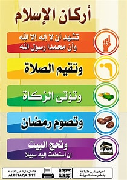

أركان الاسلام
أركان الإسلام الإسلام هو المنهج الذي بيّنه الله وارتضاه للناس كي يستقيموا عليه ويهتدوا بهداه، وكأي منهج موجود في الدنيا جاء الإسلام بأسس قويمة يجب الالتزام بها، وتُسمّى أركان الإسلام، وقد بيّن رسول الله -صلّى الله عليه وسلّم- هذه الأسس وذكر أهميتها، ومن ذلك: أنها دليل على إسلام ونجاة من تحقّقت فيه. قال رسول الله -صلى الله عليه وسلم-: (بني الإسلام على خمس)،[١] وفي ذلك بيان لعظم شأن أركان الإسلام، فكلّنا يعرف أنّ البنيان القويّ يقوم على أعمدة قويّة، فإذا سقطت أعمدته أو اختلّ أحدها سقط ووقع.[٢] فيديو قد يعجبك: أما بالنسبة لعدد أركان الإسلام فهي خمسة أركانٍ؛ ذكَرَها رسول الله -صلّى الله عليه وسلم- في السنة النبوية، إذ قَالَ: (بُنِيَ الإسْلَامُ علَى خَمْسٍ: شَهَادَةِ أنْ لا إلَهَ إلَّا اللَّهُ وأنَّ مُحَمَّدًا رَسولُ اللَّهِ، وإقَامِ الصَّلَاةِ، وإيتَاءِ الزَّكَاةِ، والحَجِّ، وصَوْمِ رَمَضَانَ).
